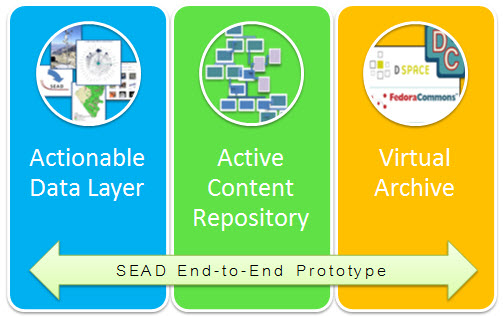

SEAD Data Services Demonstration Site
Welcome to the evolving SEAD demonstration site where you can explore the capabilities of SEAD's light-weight data services. SEAD allows you to
- Find Data
- Work with Data
- Publish and Preserve Data, and
- Explore research and data resources across the community
SEAD supports these activites with its website and three interacting components:
- An Active Content Repository (ACR) providing secure project spaces where data can be collected, shared, annotated, analyzed, used to create new data products, and ultimately published;
- A community research profile and analytics service (VIVO) that tracks information about real-world entities (e.g. people, projects, centers), and provides links and citation information about papers, presentations, and data,and
- A Virtual Archive (VA) that packages fixed, bounded versions of the data and information from ACR spaces and VIVO into new data collections, generates Digital Object Identifiers (DOI), matches collections to appropriate long-term repositories working with SEAD, and registers the new data across SEAD’s components and with internal and external data discovery services .
If you're interested in using SEAD in your project or including its capabilities in your proposal, we encourage you to contact us directly at:SEADdatanet@umich.edu
SEAD Demonstration Data Service Links
SEAD Active Content Repository
The SEAD ACR has multiple interfaces that display a project's data in different ways. An ACR instance can be made private to a given group, but our demonstration site has been configured to allow public access for viewing. To view the current demo data collections, use the links below. If you'd like to upload some data and try out more of the annotation, tagging, and commenting functions, register for an account at the first link below.
SEAD VIVO
SEAD has assembled research profiles on over 1700 researchers related through collaboration to the National Center for Earth Surface Dynamics. By using the link below, you can explore those profiles and look at plots and graphs that show co-citation, co-authorship relationships and the dynamics of research product creation over time. No login is required to explore these resources. If you'd like to create a test profile, please contact us at the email address above.
To learn more about SEAD's Virtual Archive and get an account to see how data from the ACR can be packaged, published, and submitted to a long-term store, please contact SEAD at the email above.
